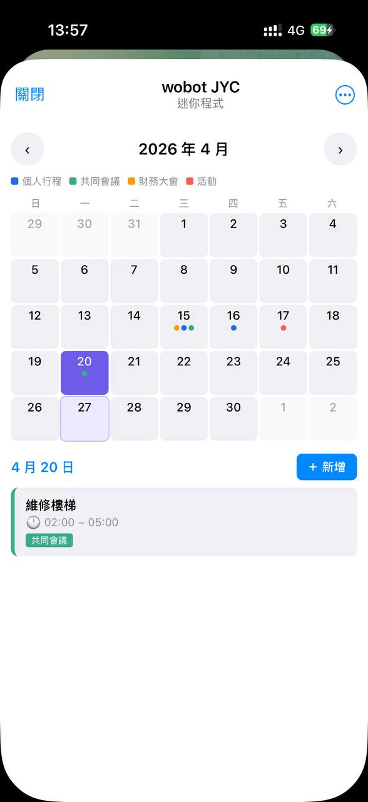
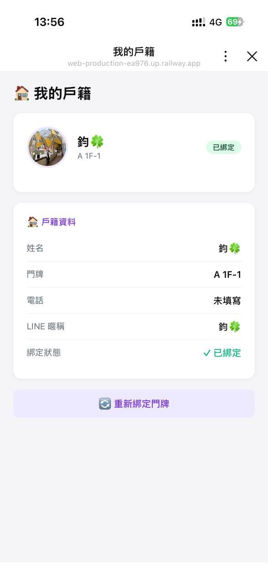
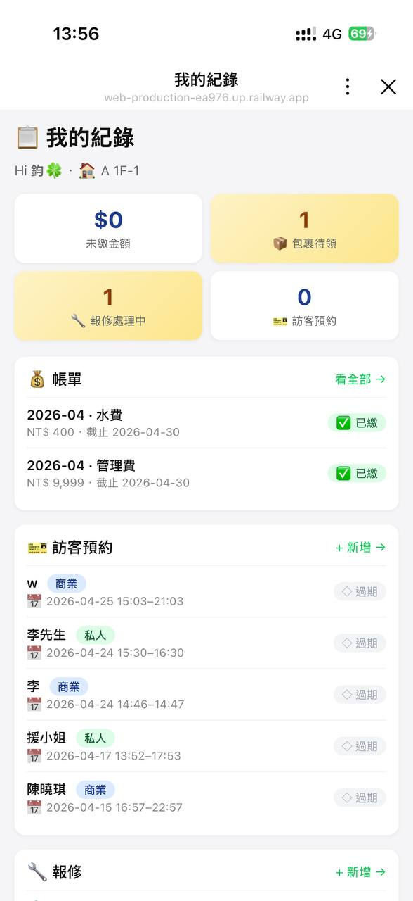

每個功能對應一段實機錄影，標 ⏳ 表示影片待補拍。從架構頁 chip 點過來會自動跳到對應段落。
打卡 / 請假 / 加班 / 補卡 / 班表 / 工單 / 主管審批

同一件事，不同角色各用自己最熟悉的工具完成。流程中有「前往後台」按鈕直接跳轉。
員工在 TG /menu 點「✨ 新建報價」，或物業公司直接在 Web 後台 → 選客戶 / 服務類別（保全・清潔・電梯…）/ 金額類型（月費・總額・單價）/ 起迄日期 → 產生公開簽署連結
Web 後台新增 →管委會或業主收到專屬 URL → 看合約內容（金額 / 條款 / 附件）→ 電子簽名同意，無需下載 App
客戶簽署後，報價單自動轉成正式合約，所有往來文件與稽核軌跡留存
即將到期合約後台看板提醒，一鍵產生續約合約（繼承金額 / 條款），不再錯過續簽時點
綁定 / 訪客 / 報修 / 包裹 / 公設 / 繳費 / 公告 / 評分

